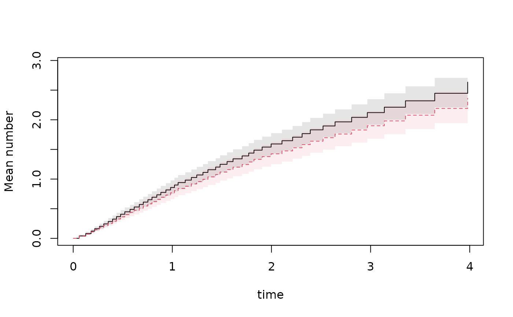
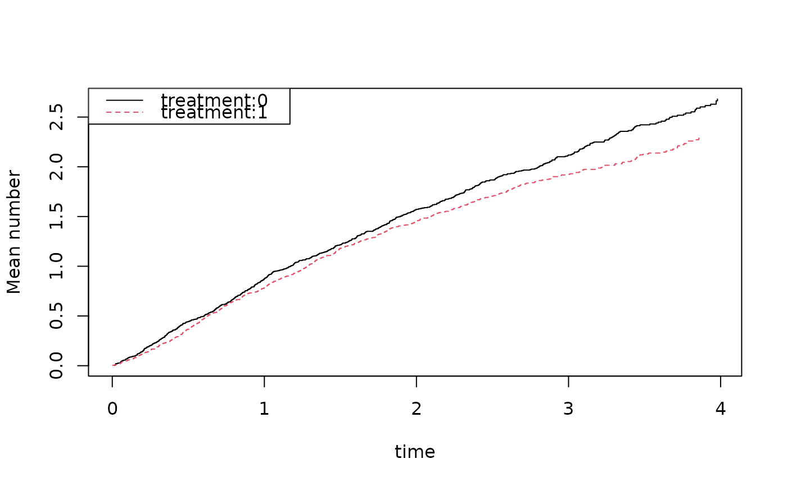

Fits Ghosh-Lin IPCW Cox-type model
Usage
recreg(
formula,
data,
cause = 1,
death.code = 2,
cens.code = 0,
cens.model = ~1,
weights = NULL,
offset = NULL,
Gc = NULL,
wcomp = NULL,
marks = NULL,
augmentation.type = c("lindyn.augment", "lin.augment"),
...
)Arguments
- formula
formula with 'Event' outcome
- data
data frame
- cause
of interest (1 default)
- death.code
codes for death (terminating event, 2 default)
- cens.code
code of censoring (0 default)
- cens.model
for stratified Cox model without covariates
- weights
weights for score equations
- offset
offsets for model
- Gc
censoring weights for time argument, default is to calculate these with a Kaplan-Meier estimator, should then give G_c(T_i-)
- wcomp
weights for composite outcome, so when cause=c(1,3), we might have wcomp=c(1,2).
- marks
a mark value can be specified, this is vector from the data-frame where the mark value can be found at all events
- augmentation.type
of augmentation when augmentation model is given
- ...
Additional arguments to lower level funtions
Details
For Cox type model : $$ E(dN_1(t)|X) = \mu_0(t)dt exp(X^T \beta) $$ by solving Cox-type IPCW weighted score equations $$ \int (Z - E(t)) w(t) dN_1(t) $$ where $$w(t) = G(t) (I(T_i \wedge t < C_i)/G_c(T_i \wedge t))$$ and $$E(t) = S_1(t)/S_0(t)$$ and $$S_j(t) = \sum X_i^j w_i(t) \exp(X_i^T \beta)$$.
The iid decomposition of the beta's are on the form $$ \int (Z - E ) w(t) dM_1 + \int q(s)/p(s) dM_c $$ and returned as iid.
Events, deaths and censorings are specified via stop start structure and the Event call, that via a status vector and cause (code), censoring-codes (cens.code) and death-codes (death.code) indentifies these. See example and vignette.
Examples
## data with no ties
library(mets)
data(hfactioncpx12)
hf <- hfactioncpx12
hf$x <- as.numeric(hf$treatment)
dd <- data.frame(treatment=levels(hf$treatment),id=1)
gl <- recreg(Event(entry,time,status)~treatment+cluster(id),data=hf,cause=1,death.code=2)
summary(gl)
#>
#> n events
#> 2132 1391
#>
#> 741 clusters
#> coeffients:
#> Estimate S.E. dU^-1/2 P-value
#> treatment1 -0.110404 0.078656 0.053776 0.1604
#>
#> exp(coeffients):
#> Estimate 2.5% 97.5%
#> treatment1 0.89547 0.76754 1.0447
#>
head(iid(gl))
#> treatment1
#> 1 -1.266428e-04
#> 2 -6.112340e-04
#> 3 2.885192e-03
#> 4 1.308207e-03
#> 5 5.404664e-05
#> 6 2.229380e-03
pgl <- predict(gl,dd,se=1); plot(pgl,se=1)

## censoring stratified after treatment
gls <- recreg(Event(entry,time,status)~treatment+cluster(id),data=hf,
cause=1,death.code=2,cens.model=~strata(treatment))
summary(gls)
#>
#> n events
#> 2132 1391
#>
#> 741 clusters
#> coeffients:
#> Estimate S.E. dU^-1/2 P-value
#> treatment1 -0.109509 0.078707 0.053777 0.1641
#>
#> exp(coeffients):
#> Estimate 2.5% 97.5%
#> treatment1 0.89627 0.76815 1.0458
#>
glss <- recreg(Event(entry,time,status)~strata(treatment)+cluster(id),data=hf,
cause=1,death.code=2,cens.model=~strata(treatment))
summary(glss)
#>
#> n events
#> 2132 1391
#>
plot(glss)

## IPCW at 2 years
ll2 <- recregIPCW(Event(entry,time,status)~treatment+cluster(id),data=hf,
cause=1,death.code=2,time=2,cens.model=~strata(treatment))
summary(ll2)
#> n events
#> 741 1052
#>
#> 741 clusters
#> coeffients:
#> Estimate Std.Err 2.5% 97.5% P-value
#> (Intercept) 0.452257 0.060901 0.332893 0.571621 0.0000
#> treatment1 -0.078348 0.093520 -0.261644 0.104948 0.4022
#>
#> exp(coeffients):
#> Estimate 2.5% 97.5%
#> (Intercept) 1.57186 1.39500 1.7711
#> treatment1 0.92464 0.76979 1.1107
#>
#>
ll2i <- recregIPCW(Event(entry,time,status)~-1+treatment+cluster(id),data=hf,
cause=1,death.code=2,time=2,cens.model=~strata(treatment))
summary(ll2i)
#> n events
#> 741 1052
#>
#> 741 clusters
#> coeffients:
#> Estimate Std.Err 2.5% 97.5% P-value
#> treatment0 0.452257 0.060901 0.332893 0.571621 0
#> treatment1 0.373909 0.070972 0.234806 0.513013 0
#>
#> exp(coeffients):
#> Estimate 2.5% 97.5%
#> treatment0 1.5719 1.3950 1.7711
#> treatment1 1.4534 1.2647 1.6703
#>
#>